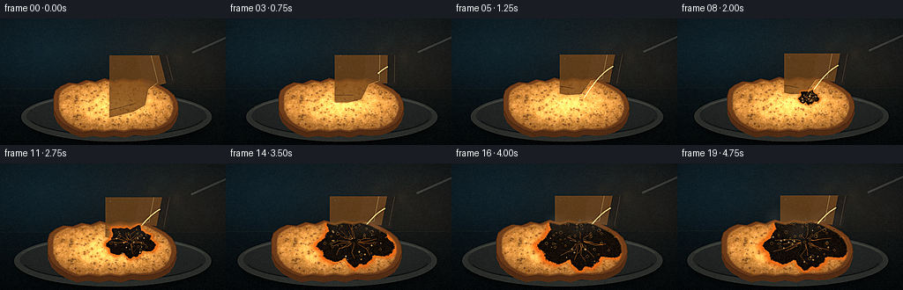
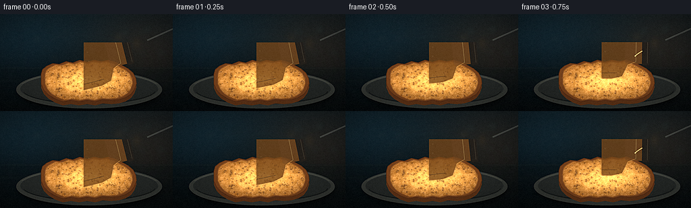
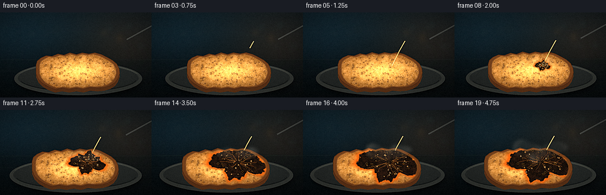
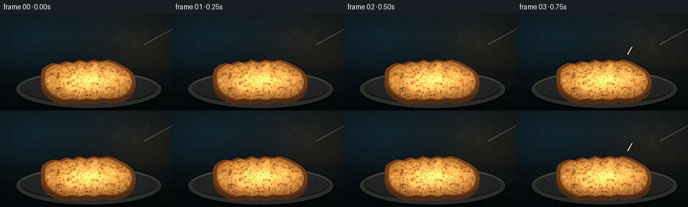
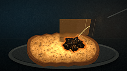
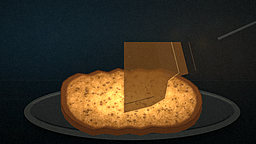
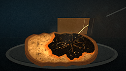
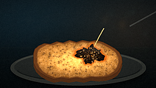
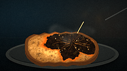
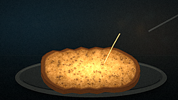

CODING AGENTS AS PIXEL WORLD MODELS
traex/DeepSeek-V4.1-Flash · material_0038
点击播放 · 原生 RGB 像素
逐轮保存的候选
回放视频、检查图与代码变化。
每份候选均可单独播放。实际图片检查记录在下方工具轨迹中。
候选 01播放与检查图
点击播放 · 原生 RGB 像素


展开代码变化
--- 上一保存版本
+++ 本次保存版本
@@ -0,0 +1,569 @@
+from __future__ import annotations
+
+import math
+from pathlib import Path
+
+import numpy as np
+from PIL import Image, ImageChops, ImageDraw, ImageFilter
+
+import artifact_io
+
+
+W, H = 256, 144
+N, FPS = 20, 4
+S = 4
+RW, RH = W * S, H * S
+CASE_DIR = Path(__file__).resolve().parent
+
+
+def sc(value: float) -> int:
+ return int(round(value * S))
+
+
+def spts(points):
+ return [(sc(x), sc(y)) for x, y in points]
+
+
+def smoothstep(edge0: float, edge1: float, x: np.ndarray | float):
+ t = np.clip((x - edge0) / (edge1 - edge0), 0.0, 1.0)
+ return t * t * (3.0 - 2.0 * t)
+
+
+def lerp(a, b, t):
+ return a + (b - a) * t
+
+
+def rgba(color):
+ if len(color) == 4:
+ return tuple(color)
+ return (*color, 255)
+
+
+def make_noise(rng: np.random.Generator, scale: int = 1) -> np.ndarray:
+ low = rng.random((max(2, RH // (scale * S)), max(2, RW // (scale * S))), dtype=np.float32)
+ image = Image.fromarray(np.uint8(np.clip(low, 0, 1) * 255), "L")
+ image = image.resize((RW, RH), Image.Resampling.BICUBIC)
+ return np.asarray(image, dtype=np.float32) / 255.0
+
+
+def blend(base: Image.Image, layer: Image.Image, opacity: float = 1.0) -> Image.Image:
+ if opacity >= 1.0:
+ return Image.alpha_composite(base.convert("RGBA"), layer.convert("RGBA"))
+ alpha = layer.getchannel("A").point(lambda p: int(p * opacity))
+ layer = layer.copy()
+ layer.putalpha(alpha)
+ return Image.alpha_composite(base.convert("RGBA"), layer)
+
+
+def rounded_mask(points, blur: float = 1.5) -> Image.Image:
+ mask = Image.new("L", (RW, RH), 0)
+ ImageDraw.Draw(mask).polygon(spts(points), fill=255)
+ if blur:
+ mask = mask.filter(ImageFilter.GaussianBlur(blur * S))
+ return mask
+
+
+def scale_points(points, factor: float, center=(132, 99)):
+ cx, cy = center
+ return [(cx + (x - cx) * factor, cy + (y - cy) * factor) for x, y in points]
+
+
+TOAST_POINTS = [
+ (61, 89), (63, 82), (69, 77), (78, 73), (88, 74), (98, 70),
+ (108, 72), (118, 68), (129, 71), (139, 68), (150, 70), (160, 68),
+ (171, 71), (181, 76), (190, 81), (197, 87), (201, 95), (202, 103),
+ (199, 112), (194, 119), (186, 124), (176, 127), (164, 128),
+ (152, 127), (141, 130), (129, 128), (117, 130), (105, 128),
+ (93, 130), (82, 126), (72, 120), (65, 113), (61, 104),
+]
+
+
+def draw_plate_and_shadow(scene: Image.Image, rng: np.random.Generator):
+ # Soft cast shadow, then a shallow slate serving plate with a warm rim.
+ shadow = Image.new("RGBA", (RW, RH), (0, 0, 0, 0))
+ d = ImageDraw.Draw(shadow)
+ d.ellipse((sc(29), sc(91), sc(238), sc(143)), fill=(0, 0, 0, 175))
+ shadow = shadow.filter(ImageFilter.GaussianBlur(5 * S))
+ scene.alpha_composite(shadow)
+
+ plate = Image.new("RGBA", (RW, RH), (0, 0, 0, 0))
+ d = ImageDraw.Draw(plate)
+ d.ellipse((sc(24), sc(84), sc(240), sc(140)), fill=(50, 54, 51, 255))
+ d.ellipse((sc(30), sc(88), sc(234), sc(134)), fill=(35, 39, 38, 255))
+ d.arc((sc(27), sc(86), sc(237), sc(137)), 198, 342, fill=(113, 115, 103, 150), width=sc(0.8))
+ d.arc((sc(33), sc(91), sc(231), sc(133)), 8, 168, fill=(14, 18, 18, 220), width=sc(0.7))
+ scene.alpha_composite(plate)
+
+ # Scattered crumbs keep the plate from reading as a flat ellipse.
+ crumbs = Image.new("RGBA", (RW, RH), (0, 0, 0, 0))
+ d = ImageDraw.Draw(crumbs)
+ for _ in range(22):
+ x = rng.uniform(45, 220)
+ y = rng.uniform(118, 136)
+ if 78 < x < 192 and y < 131:
+ continue
+ r = rng.uniform(0.25, 0.85)
+ col = rng.choice([(126, 78, 32, 150), (195, 137, 60, 125), (74, 48, 25, 150)])
+ d.ellipse((sc(x - r), sc(y - r * 0.6), sc(x + r), sc(y + r * 0.6)), fill=tuple(col))
+ scene.alpha_composite(crumbs.filter(ImageFilter.GaussianBlur(0.35 * S)))
+
+
+def make_toast(rng: np.random.Generator) -> tuple[Image.Image, Image.Image]:
+ toast = Image.new("RGBA", (RW, RH), (0, 0, 0, 0))
+ draw = ImageDraw.Draw(toast)
+
+ # Thick lower crust gives the slice a physical edge.
+ side_points = [(x, y + 5.5) for x, y in TOAST_POINTS]
+ draw.polygon(spts(side_points), fill=(91, 51, 24, 255))
+ draw.polygon(spts(TOAST_POINTS), fill=(111, 63, 28, 255))
+
+ outer_mask = rounded_mask(TOAST_POINTS, blur=0.7)
+ inner_points = scale_points(TOAST_POINTS, 0.915, (132, 99.5))
+ inner_mask = rounded_mask(inner_points, blur=0.65)
+
+ yy, xx = np.mgrid[0:RH, 0:RW]
+ nx = (xx - sc(132)) / sc(65)
+ ny = (yy - sc(99)) / sc(29)
+ radial = np.clip(np.sqrt((nx * 0.82) ** 2 + (ny * 0.92) ** 2), 0, 1)
+
+ fine = make_noise(rng, 1)
+ medium = make_noise(rng, 3)
+ toast_light = np.array([231, 178, 91], dtype=np.float32)
+ toast_dark = np.array([155, 84, 29], dtype=np.float32)
+ grad = (1.0 - radial[..., None] * 0.72).astype(np.float32)
+ color = toast_dark + (toast_light - toast_dark) * grad
+ variation = ((fine - 0.5) * 31 + (medium - 0.5) * 22)[..., None]
+ color = np.clip(color + variation, 0, 255).astype(np.uint8)
+ crumb = Image.fromarray(color, "RGB").convert("RGBA")
+ crumb.putalpha(inner_mask)
+ toast.alpha_composite(crumb)
+
+ # Fine pores and toasted flecks are the key readable bread cue at this size.
+ pores = Image.new("RGBA", (RW, RH), (0, 0, 0, 0))
+ d = ImageDraw.Draw(pores)
+ for _ in range(245):
+ x = rng.uniform(69, 195)
+ y = rng.uniform(75, 123)
+ if inner_mask.getpixel((sc(x), sc(y))) < 90:
+ continue
+ rx = rng.uniform(0.22, 1.25)
+ ry = rx * rng.uniform(0.55, 1.0)
+ dark = rng.uniform(0.45, 0.9)
+ fill = (int(91 + 25 * dark), int(48 + 18 * dark), int(22 + 9 * dark), int(95 + 90 * dark))
+ d.ellipse((sc(x - rx), sc(y - ry), sc(x + rx), sc(y + ry)), fill=fill)
+ if rx > 0.62:
+ d.arc(
+ (sc(x - rx), sc(y - ry), sc(x + rx), sc(y + ry)),
+ 195, 325, fill=(241, 194, 111, 105), width=max(1, sc(0.18)),
+ )
+ pores = pores.filter(ImageFilter.GaussianBlur(0.2 * S))
+ pores.putalpha(ImageChops.multiply(pores.getchannel("A"), inner_mask))
+ toast.alpha_composite(pores)
+
+ # A darker, uneven crust ring and crisp side highlight.
+ rim = Image.new("RGBA", (RW, RH), (0, 0, 0, 0))
+ d = ImageDraw.Draw(rim)
+ d.line(spts(TOAST_POINTS + [TOAST_POINTS[0]]), fill=(80, 42, 20, 220), width=sc(1.0), joint="curve")
+ d.arc((sc(63), sc(76), sc(199), sc(128)), 194, 345, fill=(192, 123, 53, 105), width=sc(0.55))
+ toast.alpha_composite(rim)
+
+ return toast, inner_mask
+
+
+def make_background(rng: np.random.Generator) -> Image.Image:
+ yy, xx = np.mgrid[0:RH, 0:RW]
+ yn = yy / max(1, RH - 1)
+ xn = xx / max(1, RW - 1)
+ top = np.array([17, 30, 37], dtype=np.float32)
+ bottom = np.array([5, 9, 12], dtype=np.float32)
+ arr = top + (bottom - top) * (yn[..., None] ** 0.8)
+ cool = np.exp(-(((xn - 0.1) / 0.45) ** 2 + ((yn - 0.22) / 0.4) ** 2))
+ warm = np.exp(-(((xn - 0.84) / 0.33) ** 2 + ((yn - 0.34) / 0.45) ** 2))
+ arr += cool[..., None] * np.array([5, 15, 20], dtype=np.float32)
+ arr += warm[..., None] * np.array([22, 12, 4], dtype=np.float32)
+ scene = Image.fromarray(np.uint8(np.clip(arr, 0, 255)), "RGB").convert("RGBA")
+
+ # Out-of-focus lab glassware and reflected highlights.
+ bokeh = Image.new("RGBA", (RW, RH), (0, 0, 0, 0))
+ d = ImageDraw.Draw(bokeh)
+ for _ in range(24):
+ x = rng.uniform(-10, 270)
+ y = rng.uniform(8, 80)
+ r = rng.uniform(1.5, 7.5)
+ alpha = int(rng.integers(12, 42))
+ tint = rng.choice([(87, 151, 164), (163, 118, 58), (122, 143, 130)])
+ d.ellipse((sc(x - r), sc(y - r), sc(x + r), sc(y + r)), fill=(*tint, int(alpha)))
+ bokeh = bokeh.filter(ImageFilter.GaussianBlur(5 * S))
+ scene.alpha_composite(bokeh)
+
+ glass = Image.new("RGBA", (RW, RH), (0, 0, 0, 0))
+ d = ImageDraw.Draw(glass)
+ d.rounded_rectangle((sc(-12), sc(16), sc(31), sc(79)), radius=sc(8), outline=(89, 131, 137, 80), width=sc(1.2))
+ d.line((sc(8), sc(21), sc(8), sc(67)), fill=(151, 200, 201, 45), width=sc(0.9))
+ d.ellipse((sc(-5), sc(11), sc(28), sc(23)), outline=(111, 157, 158, 70), width=sc(0.8))
+ d.rounded_rectangle((sc(224), sc(9), sc(274), sc(63)), radius=sc(5), outline=(117, 104, 73, 62), width=sc(0.8))
+ glass = glass.filter(ImageFilter.GaussianBlur(2.4 * S))
+ scene.alpha_composite(glass)
+
+ # Countertop horizon and soft reflection bands.
+ bench = Image.new("RGBA", (RW, RH), (0, 0, 0, 0))
+ d = ImageDraw.Draw(bench)
+ d.rectangle((0, sc(79), RW, RH), fill=(11, 20, 21, 75))
+ d.line((0, sc(80), RW, sc(80)), fill=(113, 128, 117, 28), width=sc(0.5))
+ d.line((0, sc(99), RW, sc(99)), fill=(92, 111, 103, 18), width=sc(0.5))
+ scene.alpha_composite(bench)
+ return scene
+
+
+def make_bottle(rng: np.random.Generator) -> tuple[Image.Image, tuple[int, int]]:
+ # Local upright amber reagent bottle; the mouth is the rotation pivot.
+ bw, bh = 120, 175
+ local = Image.new("RGBA", (bw * S, bh * S), (0, 0, 0, 0))
+ d = ImageDraw.Draw(local)
+ mouth = (60, 13)
+
+ body = [(22, 42), (39, 34), (44, 22), (76, 22), (81, 34), (98, 42),
+ (102, 57), (102, 149), (95, 158), (84, 162), (36, 162),
+ (25, 158), (18, 149), (18, 57)]
+ d.polygon(spts(body), fill=(120, 73, 28, 185))
+ d.rounded_rectangle((sc(41), sc(8), sc(79), sc(38)), radius=sc(3), fill=(115, 72, 32, 205))
+ d.rounded_rectangle((sc(39), sc(2), sc(81), sc(13)), radius=sc(2), fill=(35, 31, 27, 255))
+ d.line((sc(42), sc(5), sc(78), sc(5)), fill=(105, 93, 73, 150), width=sc(0.6))
+
+ # Acid volume, meniscus, and a luminous edge visible through the glass.
+ liquid = [(24, 84), (96, 84), (100, 146), (94, 155), (82, 159),
+ (38, 159), (26, 154), (20, 145)]
+ d.polygon(spts(liquid), fill=(204, 144, 42, 205))
+ d.line(spts([(25, 84), (55, 88), (95, 84)]), fill=(244, 194, 89, 190), width=sc(0.8))
+ d.ellipse((sc(28), sc(83), sc(92), sc(91)), outline=(247, 199, 102, 155), width=sc(0.5))
+
+ # Glass outline and sharp reflections.
+ d.line(spts(body + [body[0]]), fill=(220, 169, 91, 150), width=sc(0.75), joint="curve")
+ d.line(spts([(27, 47), (27, 145), (38, 155)]), fill=(255, 229, 177, 165), width=sc(0.9))
+ d.line(spts([(32, 51), (32, 138)]), fill=(255, 249, 222, 70), width=sc(0.45))
+ d.line(spts([(93, 52), (94, 142), (88, 151)]), fill=(62, 36, 16, 190), width=sc(0.75))
+
+ # Small weathered hazard label with a red diamond.
+ d.rounded_rectangle((sc(30), sc(102), sc(90), sc(138)), radius=sc(1.5), fill=(224, 216, 188, 220))
+ d.polygon(spts([(60, 108), (68, 116), (60, 124), (52, 116)]), outline=(158, 46, 31, 235), width=sc(0.75))
+ d.line(spts([(56, 112), (64, 120)]), fill=(47, 45, 40, 230), width=sc(0.45))
+ d.line(spts([(64, 112), (56, 120)]), fill=(47, 45, 40, 230), width=sc(0.45))
+ d.line(spts([(35, 130), (83, 130)]), fill=(81, 70, 54, 135), width=sc(0.4))
+
+ # Gentle glass mottling.
+ glints = Image.new("RGBA", local.size, (0, 0, 0, 0))
+ gd = ImageDraw.Draw(glints)
+ for _ in range(25):
+ x = rng.uniform(25, 96)
+ y = rng.uniform(40, 157)
+ r = rng.uniform(0.3, 1.1)
+ gd.ellipse((sc(x - r), sc(y - r), sc(x + r), sc(y + r)),
+ fill=(255, 221, 153, int(rng.integers(15, 55))))
+ local.alpha_composite(glints.filter(ImageFilter.GaussianBlur(0.5 * S)))
+ return local, (mouth[0] * S, mouth[1] * S)
+
+
+def paste_rotated(scene: Image.Image, local: Image.Image, pivot_local, pivot_scene, angle):
+ # Rotate about the bottle mouth so the pouring point remains fixed.
+ rotated = local.rotate(angle, resample=Image.Resampling.BICUBIC, center=pivot_local, expand=False)
+ x = int(round(pivot_scene[0] - pivot_local[0]))
+ y = int(round(pivot_scene[1] - pivot_local[1]))
+ scene.alpha_composite(rotated, (x, y))
+
+
+def quad_bezier(p0, p1, p2, steps=36):
+ values = []
+ for i in range(steps + 1):
+ t = i / steps
+ x = (1 - t) ** 2 * p0[0] + 2 * (1 - t) * t * p1[0] + t * t * p2[0]
+ y = (1 - t) ** 2 * p0[1] + 2 * (1 - t) * t * p1[1] + t * t * p2[1]
+ values.append((x, y))
+ return values
+
+
+def draw_stream(scene: Image.Image, frame: int):
+ mouth = (184.0, 55.0)
+ impact = (151.0, 91.0)
+ control = (168.0, 63.5)
+ curve = quad_bezier(mouth, control, impact, 44)
+
+ if frame < 3:
+ return
+ progress = min(1.0, (frame - 2) / 3.0)
+ if frame >= 5:
+ progress = 1.0
+
+ endpoint_index = max(2, int((len(curve) - 1) * progress))
+ path = curve[: endpoint_index + 1]
+ jitter = math.sin(frame * 1.7) * 0.12
+ path = [(x + jitter, y) for x, y in path]
+
+ stream = Image.new("RGBA", (RW, RH), (0, 0, 0, 0))
+ d = ImageDraw.Draw(stream)
+ if len(path) > 1:
+ d.line(spts(path), fill=(176, 119, 29, 180), width=sc(2.1), joint="curve")
+ d.line(spts(path), fill=(242, 212, 104, 235), width=sc(1.15), joint="curve")
+ d.line(spts(path), fill=(255, 249, 200, 245), width=sc(0.38), joint="curve")
+
+ # Early droplet, then small splash beads at the impact.
+ if frame in (3, 4):
+ x, y = path[-1]
+ d.ellipse((sc(x - 1.0), sc(y - 0.8), sc(x + 1.0), sc(y + 1.1)), fill=(245, 216, 107, 245))
+ d.ellipse((sc(x - 0.35), sc(y - 0.55), sc(x + 0.35), sc(y + 0.15)), fill=(255, 253, 221, 245))
+ if 4 <= frame <= 8:
+ strength = 1.0 if frame <= 6 else max(0.0, (8 - frame) / 2.0)
+ beads = [(-4.0, -1.0, 0.55), (3.8, -1.8, 0.65), (-2.4, -3.4, 0.42),
+ (5.0, 1.3, 0.48), (0.6, -4.2, 0.38)]
+ for dx, dy, radius in beads:
+ alpha = int(220 * strength)
+ x, y = impact[0] + dx, impact[1] + dy - frame * 0.18
+ d.ellipse((sc(x - radius), sc(y - radius), sc(x + radius), sc(y + radius)),
+ fill=(242, 209, 99, alpha))
+ d.ellipse((sc(x - radius * 0.32), sc(y - radius * 0.45),
+ sc(x + radius * 0.32), sc(y + radius * 0.15)),
+ fill=(255, 251, 215, alpha))
+
+ stream = stream.filter(ImageFilter.GaussianBlur(0.18 * S))
+ scene.alpha_composite(stream)
+
+
+def char_masks(age: float, inner_mask: Image.Image):
+ if age <= 0:
+ return None, None, None, None
+
+ cx, cy = 151.0, 91.0
+ yy, xx = np.mgrid[0:RH, 0:RW]
+ dx = (xx - sc(cx)) / S
+ dy = (yy - sc(cy)) / S
+ theta = np.arctan2(dy, dx)
+ growth = smoothstep(0.0, 0.82, age)
+ rx = 4.0 + 40.0 * growth
+ ry = 3.0 + 25.0 * growth
+ radial = np.sqrt((dx / rx) ** 2 + (dy / ry) ** 2)
+ irregular = (
+ 1.0
+ + 0.12 * np.sin(5.0 * theta + 0.7)
+ + 0.07 * np.sin(9.0 * theta - 1.1)
+ + 0.035 * np.sin(17.0 * theta + 0.4)
+ )
+ rng = np.random.default_rng(901 + int(age * 20))
+ edge_noise = make_noise(rng, 1)
+ radial_noisy = radial / (irregular + (edge_noise - 0.5) * 0.045)
+
+ char_alpha = np.clip((1.015 - radial_noisy) / 0.055, 0, 1)
+ char_alpha = char_alpha * char_alpha * (3 - 2 * char_alpha)
+ inner = np.asarray(inner_mask, dtype=np.float32) / 255.0
+ char_alpha *= inner
+ char = Image.fromarray(np.uint8(char_alpha * 255), "L")
+
+ wet_outer = np.clip((1.19 - radial_noisy) / 0.19, 0, 1) * inner
+ wet_inner = np.clip((1.015 - radial_noisy) / 0.05, 0, 1) * inner
+ wet = np.clip(wet_outer - wet_inner * 0.72, 0, 1)
+ wet_img = Image.fromarray(np.uint8(wet * 190), "L")
+
+ ring = np.exp(-((radial_noisy - 1.015) / 0.035) ** 2)
+ glow = np.exp(-((radial_noisy - 1.03) / 0.13) ** 2)
+ ring = np.clip((ring * 0.85 + glow * 0.42) * inner, 0, 1)
+ ring_img = Image.fromarray(np.uint8(ring * 255), "L")
+ return char, wet_img, ring_img, (cx, cy, rx, ry)
+
+
+def draw_reaction(scene: Image.Image, inner_mask: Image.Image, age: float, frame: int, rng: np.random.Generator):
+ if age <= 0:
+ return
+ char_mask, wet_mask, ring_mask, dims = char_masks(age, inner_mask)
+ if char_mask is None:
+ return
+ cx, cy, rx, ry = dims
+
+ # Wet acidic halo around the advancing carbonized zone.
+ wet = Image.new("RGBA", (RW, RH), (176, 105, 22, 0))
+ wet.putalpha(wet_mask)
+ scene.alpha_composite(wet)
+
+ # Amber heat bloom and a hot, fizzing reaction edge.
+ ring = Image.new("RGBA", (RW, RH), (255, 103, 18, 0))
+ ring.putalpha(ring_mask)
+ ring = ring.filter(ImageFilter.GaussianBlur(1.3 * S))
+ scene.alpha_composite(ring)
+
+ # Carbonized surface with mottled ash and a few internal embers.
+ noise = make_noise(rng, 1)
+ yy, xx = np.mgrid[0:RH, 0:RW]
+ char_color = np.zeros((RH, RW, 4), dtype=np.uint8)
+ char_color[..., 0] = np.clip(10 + noise * 20, 0, 255).astype(np.uint8)
+ char_color[..., 1] = np.clip(7 + noise * 13, 0, 255).astype(np.uint8)
+ char_color[..., 2] = np.clip(5 + noise * 8, 0, 255).astype(np.uint8)
+ char_color[..., 3] = np.asarray(char_mask)
+ char_layer = Image.fromarray(char_color, "RGBA")
+
+ d = ImageDraw.Draw(char_layer)
+ for _ in range(16):
+ angle = rng.uniform(0, math.tau)
+ length = rng.uniform(0.25, 0.9)
+ p0 = (cx + math.cos(angle) * rx * 0.12, cy + math.sin(angle) * ry * 0.12)
+ points = [p0]
+ for step in range(1, 4):
+ a = angle + rng.uniform(-0.16, 0.16)
+ frac = length * step / 3.0
+ points.append((cx + math.cos(a) * rx * frac, cy + math.sin(a) * ry * frac))
+ d.line(spts(points), fill=(255, 94, 15, int(rng.integers(45, 115))),
+ width=max(1, sc(0.24)))
+
+ for _ in range(18):
+ a = rng.uniform(0, math.tau)
+ rr = math.sqrt(rng.random()) * 0.86
+ x = cx + math.cos(a) * rx * rr
+ y = cy + math.sin(a) * ry * rr
+ size = rng.uniform(0.25, 1.0)
+ shade = int(rng.integers(45, 105))
+ d.ellipse((sc(x - size), sc(y - size), sc(x + size), sc(y + size)),
+ fill=(shade, shade, shade - 4, int(rng.integers(80, 165))))
+ scene.alpha_composite(char_layer)
+
+ # Bubbles bloom in deterministic locations and persist as the front advances.
+ bubbles = Image.new("RGBA", (RW, RH), (0, 0, 0, 0))
+ bd = ImageDraw.Draw(bubbles)
+ bubble_rng = np.random.default_rng(441)
+ for i in range(38):
+ a = bubble_rng.uniform(0, math.tau)
+ rr = math.sqrt(bubble_rng.random()) * 0.86
+ birth = bubble_rng.uniform(0.02, 0.72)
+ radius = bubble_rng.uniform(0.45, 1.55)
+ drift = bubble_rng.uniform(0.0, 1.2)
+ if age < birth:
+ continue
+ life = min(1.0, (age - birth) / 0.16)
+ x = cx + math.cos(a) * rx * rr
+ y = cy + math.sin(a) * ry * rr - life * drift
+ r = radius * (0.45 + 0.55 * life)
+ outline = (255, int(105 + 45 * life), 24, int(90 + 145 * life))
+ bd.ellipse((sc(x - r), sc(y - r), sc(x + r), sc(y + r)),
+ fill=(18, 12, 8, 215), outline=outline, width=max(1, sc(0.23)))
+ bd.arc((sc(x - r), sc(y - r), sc(x + r), sc(y + r)), 198, 332,
+ fill=(255, 218, 125, int(80 + 120 * life)), width=max(1, sc(0.17)))
+ bubbles = bubbles.filter(ImageFilter.GaussianBlur(0.1 * S))
+ scene.alpha_composite(bubbles)
+
+
+def draw_smoke(scene: Image.Image, age: float, frame: int):
+ if age <= 0.01:
+ return
+ sw, sh = W * 2, H * 2
+ smoke = Image.new("RGBA", (sw, sh), (0, 0, 0, 0))
+ d = ImageDraw.Draw(smoke)
+ rng = np.random.default_rng(7701)
+ cx, cy = 151.0, 90.0
+ puffs = []
+ for i in range(30):
+ birth = rng.uniform(0.01, 0.78)
+ angle = rng.uniform(-2.8, -0.25)
+ radius0 = rng.uniform(4, 22)
+ speed = rng.uniform(11, 29)
+ spread = rng.uniform(2.0, 7.0)
+ lifetime = rng.uniform(0.45, 1.0)
+ opacity = rng.uniform(22, 68)
+ puffs.append((birth, angle, radius0, speed, spread, lifetime, opacity))
+
+ for i, (birth, angle, radius0, speed, spread, lifetime, opacity) in enumerate(puffs):
+ local_age = age - birth
+ if local_age <= 0 or local_age > lifetime:
+ continue
+ life = local_age / lifetime
+ fade = math.sin(math.pi * min(1.0, life)) ** 0.55
+ x0 = cx + math.cos(angle) * radius0
+ y0 = cy + math.sin(angle) * radius0 * 0.55
+ x = x0 + math.cos(angle + 0.7) * speed * local_age + math.sin(local_age * 9 + i) * 1.2
+ y = y0 - speed * local_age * 0.8
+ rx = spread * (0.6 + 1.6 * local_age)
+ ry = rx * rng.uniform(0.6, 1.15)
+ alpha = int(opacity * fade)
+ tint = (177, 187, 179) if i % 3 else (218, 206, 179)
+ for k in range(2):
+ xx = (x + (k - 0.5) * rx * 0.55) * 2
+ yy = (y + (k - 0.5) * ry * 0.22) * 2
+ d.ellipse((xx - rx * 2, yy - ry * 2, xx + rx * 2, yy + ry * 2),
+ fill=(*tint, max(0, alpha // (k + 1))))
+ smoke = smoke.filter(ImageFilter.GaussianBlur(5.0 * 2))
+ smoke = smoke.resize((RW, RH), Image.Resampling.BICUBIC)
+ scene.alpha_composite(smoke)
+
+
+def add_vignette_and_grade(image: Image.Image, frame: int) -> Image.Image:
+ yy, xx = np.mgrid[0:RH, 0:RW]
+ nx = (xx / (RW - 1) - 0.5) * 2
+ ny = (yy / (RH - 1) - 0.5) * 2
+ radius = np.sqrt(nx * nx * 0.72 + ny * ny)
+ vignette = np.clip(1.12 - 0.32 * radius ** 1.65, 0.52, 1.0)
+ arr = np.asarray(image.convert("RGB"), dtype=np.float32)
+ arr *= vignette[..., None]
+ arr[..., 0] *= 1.025
+ arr[..., 1] *= 1.005
+ arr[..., 2] *= 0.985
+ return Image.fromarray(np.uint8(np.clip(arr, 0, 255)), "RGB")
+
+
+def finish_frame(scene: Image.Image, frame: int) -> np.ndarray:
+ # Slow push-in toward the reaction, then downsample with a restrained bloom.
+ t = frame / (N - 1)
+ zoom = 1.0 + 0.055 * smoothstep(0.0, 1.0, t)
+ crop_w, crop_h = RW / zoom, RH / zoom
+ center_x = lerp(132.0, 139.0, t) * S
+ center_y = lerp(92.0, 93.0, t) * S
+ left = max(0, min(RW - crop_w, center_x - crop_w / 2))
+ top = max(0, min(RH - crop_h, center_y - crop_h / 2))
+ scene = scene.crop((left, top, left + crop_w, top + crop_h)).resize((RW, RH), Image.Resampling.LANCZOS)
+ graded = add_vignette_and_grade(scene, frame)
+ small = graded.resize((W, H), Image.Resampling.LANCZOS)
+
+ bloom_source = small.filter(ImageFilter.GaussianBlur(2.0))
+ bright = np.asarray(bloom_source, dtype=np.float32)
+ luminance = bright.mean(axis=2, keepdims=True)
+ bloom_mask = np.clip((luminance - 112.0) / 90.0, 0, 0.42)
+ arr = np.asarray(small, dtype=np.float32)
+ arr = arr + bright * bloom_mask
+ arr = np.asarray(Image.fromarray(np.uint8(np.clip(arr, 0, 255)), "RGB").filter(
+ ImageFilter.UnsharpMask(radius=1.1, percent=82, threshold=3)
+ ), dtype=np.float32)
+
+ grain_rng = np.random.default_rng(9000 + frame)
+ grain = grain_rng.normal(0.0, 2.2, (H, W, 1))
+ arr = np.clip(arr + grain, 0, 255)
+ return arr.astype(np.uint8)
+
+
+def main():
+ rng = np.random.default_rng(1807)
+ base = make_background(rng)
+ draw_plate_and_shadow(base, rng)
+ toast, inner_mask = make_toast(rng)
+ base.alpha_composite(toast)
+ bottle, pivot_local = make_bottle(rng)
+
+ frames = []
+ for frame in range(N):
+ t = frame / (N - 1)
+ scene = base.copy()
+ angle = lerp(-76.0, -101.0, smoothstep(0.0, 0.28, t))
+ paste_rotated(scene, bottle, pivot_local, (sc(184), sc(55)), angle)
+
+ # A thin lab clamp arm anchors the tilted bottle to the right edge.
+ clamp = Image.new("RGBA", (RW, RH), (0, 0, 0, 0))
+ cd = ImageDraw.Draw(clamp)
+ cd.line((sc(256), sc(22), sc(218), sc(39)), fill=(76, 81, 78, 175), width=sc(2.0))
+ cd.line((sc(256), sc(21), sc(218), sc(38)), fill=(151, 156, 145, 105), width=sc(0.45))
+ scene.alpha_composite(clamp)
+
+ draw_stream(scene, frame)
+
+ impact_age = max(0.0, min(1.0, (frame - 5) / 14.0))
+ draw_reaction(scene, inner_mask, impact_age, frame, np.random.default_rng(2300 + frame))
+ draw_smoke(scene, impact_age, frame)
+ frames.append(finish_frame(scene, frame))
+
+ artifact_io.save(np.asarray(frames, dtype=np.uint8), CASE_DIR)
+ print(f"Wrote {len(frames)} frames to {CASE_DIR}")
+
+
+if __name__ == "__main__":
+ main()
候选 02播放与检查图
点击播放 · 原生 RGB 像素


展开代码变化
--- 上一保存版本
+++ 本次保存版本
@@ -217,50 +217,54 @@
def make_bottle(rng: np.random.Generator) -> tuple[Image.Image, tuple[int, int]]:
# Local upright amber reagent bottle; the mouth is the rotation pivot.
- bw, bh = 120, 175
- local = Image.new("RGBA", (bw * S, bh * S), (0, 0, 0, 0))
- d = ImageDraw.Draw(local)
- mouth = (60, 13)
-
- body = [(22, 42), (39, 34), (44, 22), (76, 22), (81, 34), (98, 42),
- (102, 57), (102, 149), (95, 158), (84, 162), (36, 162),
- (25, 158), (18, 149), (18, 57)]
+ bw, bh = 100, 160
+ bottle = Image.new("RGBA", (bw * S, bh * S), (0, 0, 0, 0))
+ d = ImageDraw.Draw(bottle)
+ mouth = (50, 12)
+
+ body = [(18, 39), (33, 32), (37, 20), (63, 20), (67, 32), (82, 39),
+ (86, 53), (86, 137), (80, 146), (70, 150), (30, 150),
+ (20, 146), (14, 137), (14, 53)]
d.polygon(spts(body), fill=(120, 73, 28, 185))
- d.rounded_rectangle((sc(41), sc(8), sc(79), sc(38)), radius=sc(3), fill=(115, 72, 32, 205))
- d.rounded_rectangle((sc(39), sc(2), sc(81), sc(13)), radius=sc(2), fill=(35, 31, 27, 255))
- d.line((sc(42), sc(5), sc(78), sc(5)), fill=(105, 93, 73, 150), width=sc(0.6))
+ d.rounded_rectangle((sc(34), sc(7), sc(66), sc(34)), radius=sc(2.5), fill=(115, 72, 32, 205))
+ d.ellipse((sc(34), sc(6), sc(66), sc(14)), fill=(38, 32, 27, 255))
+ d.arc((sc(34), sc(7), sc(66), sc(14)), 185, 355, fill=(135, 119, 88, 145), width=sc(0.5))
# Acid volume, meniscus, and a luminous edge visible through the glass.
- liquid = [(24, 84), (96, 84), (100, 146), (94, 155), (82, 159),
- (38, 159), (26, 154), (20, 145)]
+ liquid = [(19, 77), (81, 77), (84, 134), (79, 143), (68, 147),
+ (31, 147), (21, 142), (16, 133)]
d.polygon(spts(liquid), fill=(204, 144, 42, 205))
- d.line(spts([(25, 84), (55, 88), (95, 84)]), fill=(244, 194, 89, 190), width=sc(0.8))
- d.ellipse((sc(28), sc(83), sc(92), sc(91)), outline=(247, 199, 102, 155), width=sc(0.5))
+ d.line(spts([(20, 77), (46, 81), (81, 77)]), fill=(244, 194, 89, 190), width=sc(0.8))
+ d.ellipse((sc(23), sc(76), sc(78), sc(84)), outline=(247, 199, 102, 155), width=sc(0.5))
# Glass outline and sharp reflections.
d.line(spts(body + [body[0]]), fill=(220, 169, 91, 150), width=sc(0.75), joint="curve")
- d.line(spts([(27, 47), (27, 145), (38, 155)]), fill=(255, 229, 177, 165), width=sc(0.9))
- d.line(spts([(32, 51), (32, 138)]), fill=(255, 249, 222, 70), width=sc(0.45))
- d.line(spts([(93, 52), (94, 142), (88, 151)]), fill=(62, 36, 16, 190), width=sc(0.75))
+ d.line(spts([(22, 44), (22, 132), (31, 143)]), fill=(255, 229, 177, 165), width=sc(0.9))
+ d.line(spts([(27, 48), (27, 127)]), fill=(255, 249, 222, 70), width=sc(0.45))
+ d.line(spts([(78, 49), (79, 130), (74, 140)]), fill=(62, 36, 16, 190), width=sc(0.75))
# Small weathered hazard label with a red diamond.
- d.rounded_rectangle((sc(30), sc(102), sc(90), sc(138)), radius=sc(1.5), fill=(224, 216, 188, 220))
- d.polygon(spts([(60, 108), (68, 116), (60, 124), (52, 116)]), outline=(158, 46, 31, 235), width=sc(0.75))
- d.line(spts([(56, 112), (64, 120)]), fill=(47, 45, 40, 230), width=sc(0.45))
- d.line(spts([(64, 112), (56, 120)]), fill=(47, 45, 40, 230), width=sc(0.45))
- d.line(spts([(35, 130), (83, 130)]), fill=(81, 70, 54, 135), width=sc(0.4))
+ d.rounded_rectangle((sc(26), sc(94), sc(75), sc(129)), radius=sc(1.5), fill=(224, 216, 188, 220))
+ d.polygon(spts([(50, 99), (57, 106), (50, 113), (43, 106)]), outline=(158, 46, 31, 235), width=sc(0.75))
+ d.line(spts([(47, 103), (54, 110)]), fill=(47, 45, 40, 230), width=sc(0.45))
+ d.line(spts([(54, 103), (47, 110)]), fill=(47, 45, 40, 230), width=sc(0.45))
+ d.line(spts([(30, 122), (69, 122)]), fill=(81, 70, 54, 135), width=sc(0.4))
# Gentle glass mottling.
- glints = Image.new("RGBA", local.size, (0, 0, 0, 0))
+ glints = Image.new("RGBA", bottle.size, (0, 0, 0, 0))
gd = ImageDraw.Draw(glints)
for _ in range(25):
- x = rng.uniform(25, 96)
- y = rng.uniform(40, 157)
+ x = rng.uniform(18, 83)
+ y = rng.uniform(35, 146)
r = rng.uniform(0.3, 1.1)
gd.ellipse((sc(x - r), sc(y - r), sc(x + r), sc(y + r)),
fill=(255, 221, 153, int(rng.integers(15, 55))))
- local.alpha_composite(glints.filter(ImageFilter.GaussianBlur(0.5 * S)))
- return local, (mouth[0] * S, mouth[1] * S)
+ bottle.alpha_composite(glints.filter(ImageFilter.GaussianBlur(0.5 * S)))
+
+ # A generous transparent canvas prevents the tilted body from clipping.
+ local = Image.new("RGBA", (1000, 1000), (0, 0, 0, 0))
+ local.alpha_composite(bottle, (400, 300))
+ return local, ((mouth[0] + 400) * S, (mouth[1] + 300) * S)
def paste_rotated(scene: Image.Image, local: Image.Image, pivot_local, pivot_scene, angle):
@@ -282,9 +286,9 @@
def draw_stream(scene: Image.Image, frame: int):
- mouth = (184.0, 55.0)
+ mouth = (173.0, 49.0)
impact = (151.0, 91.0)
- control = (168.0, 63.5)
+ control = (164.0, 64.0)
curve = quad_bezier(mouth, control, impact, 44)
if frame < 3:
@@ -342,13 +346,14 @@
radial = np.sqrt((dx / rx) ** 2 + (dy / ry) ** 2)
irregular = (
1.0
- + 0.12 * np.sin(5.0 * theta + 0.7)
- + 0.07 * np.sin(9.0 * theta - 1.1)
- + 0.035 * np.sin(17.0 * theta + 0.4)
+ + 0.18 * np.sin(4.0 * theta + 0.7)
+ + 0.105 * np.sin(7.0 * theta - 1.1)
+ + 0.055 * np.sin(13.0 * theta + 0.4)
+ + 0.025 * np.sin(23.0 * theta - 0.8)
)
rng = np.random.default_rng(901 + int(age * 20))
- edge_noise = make_noise(rng, 1)
- radial_noisy = radial / (irregular + (edge_noise - 0.5) * 0.045)
+ edge_noise = make_noise(rng, 2)
+ radial_noisy = radial / (irregular + (edge_noise - 0.5) * 0.075)
char_alpha = np.clip((1.015 - radial_noisy) / 0.055, 0, 1)
char_alpha = char_alpha * char_alpha * (3 - 2 * char_alpha)
@@ -356,13 +361,13 @@
char_alpha *= inner
char = Image.fromarray(np.uint8(char_alpha * 255), "L")
- wet_outer = np.clip((1.19 - radial_noisy) / 0.19, 0, 1) * inner
+ wet_outer = np.clip((1.23 - radial_noisy) / 0.23, 0, 1) * inner
wet_inner = np.clip((1.015 - radial_noisy) / 0.05, 0, 1) * inner
wet = np.clip(wet_outer - wet_inner * 0.72, 0, 1)
wet_img = Image.fromarray(np.uint8(wet * 190), "L")
- ring = np.exp(-((radial_noisy - 1.015) / 0.035) ** 2)
- glow = np.exp(-((radial_noisy - 1.03) / 0.13) ** 2)
+ ring = np.exp(-((radial_noisy - 1.015) / 0.045) ** 2)
+ glow = np.exp(-((radial_noisy - 1.03) / 0.16) ** 2)
ring = np.clip((ring * 0.85 + glow * 0.42) * inner, 0, 1)
ring_img = Image.fromarray(np.uint8(ring * 255), "L")
return char, wet_img, ring_img, (cx, cy, rx, ry)
@@ -391,14 +396,15 @@
noise = make_noise(rng, 1)
yy, xx = np.mgrid[0:RH, 0:RW]
char_color = np.zeros((RH, RW, 4), dtype=np.uint8)
- char_color[..., 0] = np.clip(10 + noise * 20, 0, 255).astype(np.uint8)
- char_color[..., 1] = np.clip(7 + noise * 13, 0, 255).astype(np.uint8)
- char_color[..., 2] = np.clip(5 + noise * 8, 0, 255).astype(np.uint8)
+ coarse = make_noise(rng, 4)
+ char_color[..., 0] = np.clip(10 + noise * 25 + coarse * 18, 0, 255).astype(np.uint8)
+ char_color[..., 1] = np.clip(7 + noise * 14 + coarse * 10, 0, 255).astype(np.uint8)
+ char_color[..., 2] = np.clip(5 + noise * 9 + coarse * 6, 0, 255).astype(np.uint8)
char_color[..., 3] = np.asarray(char_mask)
char_layer = Image.fromarray(char_color, "RGBA")
d = ImageDraw.Draw(char_layer)
- for _ in range(16):
+ for _ in range(23):
angle = rng.uniform(0, math.tau)
length = rng.uniform(0.25, 0.9)
p0 = (cx + math.cos(angle) * rx * 0.12, cy + math.sin(angle) * ry * 0.12)
@@ -410,12 +416,12 @@
d.line(spts(points), fill=(255, 94, 15, int(rng.integers(45, 115))),
width=max(1, sc(0.24)))
- for _ in range(18):
+ for _ in range(32):
a = rng.uniform(0, math.tau)
rr = math.sqrt(rng.random()) * 0.86
x = cx + math.cos(a) * rx * rr
y = cy + math.sin(a) * ry * rr
- size = rng.uniform(0.25, 1.0)
+ size = rng.uniform(0.25, 1.35)
shade = int(rng.integers(45, 105))
d.ellipse((sc(x - size), sc(y - size), sc(x + size), sc(y + size)),
fill=(shade, shade, shade - 4, int(rng.integers(80, 165))))
@@ -462,7 +468,7 @@
speed = rng.uniform(11, 29)
spread = rng.uniform(2.0, 7.0)
lifetime = rng.uniform(0.45, 1.0)
- opacity = rng.uniform(22, 68)
+ opacity = rng.uniform(32, 92)
puffs.append((birth, angle, radius0, speed, spread, lifetime, opacity))
for i, (birth, angle, radius0, speed, spread, lifetime, opacity) in enumerate(puffs):
@@ -475,7 +481,7 @@
y0 = cy + math.sin(angle) * radius0 * 0.55
x = x0 + math.cos(angle + 0.7) * speed * local_age + math.sin(local_age * 9 + i) * 1.2
y = y0 - speed * local_age * 0.8
- rx = spread * (0.6 + 1.6 * local_age)
+ rx = spread * (0.65 + 1.9 * local_age)
ry = rx * rng.uniform(0.6, 1.15)
alpha = int(opacity * fade)
tint = (177, 187, 179) if i % 3 else (218, 206, 179)
@@ -484,7 +490,7 @@
yy = (y + (k - 0.5) * ry * 0.22) * 2
d.ellipse((xx - rx * 2, yy - ry * 2, xx + rx * 2, yy + ry * 2),
fill=(*tint, max(0, alpha // (k + 1))))
- smoke = smoke.filter(ImageFilter.GaussianBlur(5.0 * 2))
+ smoke = smoke.filter(ImageFilter.GaussianBlur(3.2 * 2))
smoke = smoke.resize((RW, RH), Image.Resampling.BICUBIC)
scene.alpha_composite(smoke)
@@ -544,14 +550,14 @@
for frame in range(N):
t = frame / (N - 1)
scene = base.copy()
- angle = lerp(-76.0, -101.0, smoothstep(0.0, 0.28, t))
- paste_rotated(scene, bottle, pivot_local, (sc(184), sc(55)), angle)
+ angle = lerp(-29.0, -47.0, smoothstep(0.0, 0.28, t))
+ paste_rotated(scene, bottle, pivot_local, (sc(173), sc(49)), angle)
# A thin lab clamp arm anchors the tilted bottle to the right edge.
clamp = Image.new("RGBA", (RW, RH), (0, 0, 0, 0))
cd = ImageDraw.Draw(clamp)
- cd.line((sc(256), sc(22), sc(218), sc(39)), fill=(76, 81, 78, 175), width=sc(2.0))
- cd.line((sc(256), sc(21), sc(218), sc(38)), fill=(151, 156, 145, 105), width=sc(0.45))
+ cd.line((sc(256), sc(23), sc(214), sc(46)), fill=(76, 81, 78, 175), width=sc(2.0))
+ cd.line((sc(256), sc(22), sc(214), sc(45)), fill=(151, 156, 145, 105), width=sc(0.45))
scene.alpha_composite(clamp)
draw_stream(scene, frame)
可观测工具轨迹
实际执行的命令与返回图片。
命令 1exit 0
/bin/bash -c "pwd && rg --files -g 'prompt.txt' -g 'GENERATION_RULES.md' -g 'task_spec.json' -g '"'!node_modules'"'"
命令 2exit 0
/bin/bash -c 'ls -la'
命令 3exit 0
/bin/bash -c "find . -maxdepth 3 -type f | sed 's#"'^./##'"' | head -200"
命令 4exit 0
/bin/bash -c 'cat prompt.txt'
命令 5exit 0
/bin/bash -c 'cat GENERATION_RULES.md'
命令 6exit 0
/bin/bash -c 'cat task_spec.json'
命令 7exit 0
/bin/bash -c "sed -n '1,240p' artifact_io.py"
命令 8exit 1
/bin/bash -c 'python generate.py'
命令 9exit 0
/bin/bash -c 'python generate.py'
命令 10exit 0
/bin/bash -c 'python generate.py'
命令 11exit 0
/bin/bash -c 'rg -n "def make_bottle|body =|liquid =|label|angle =|paste_rotated|mouth =" generate.py'
命令 12exit 0
/bin/bash -c "python - <<'PY'
from PIL import Image
import numpy as np
from pathlib import Path
for i in (0, 5, 10, 15, 19):
a=np.asarray(Image.open(Path('frames')/f'{i:02d}.png'))
print(i, a.shape, a.dtype, round(float(a.mean()),2), int(a.min()), int(a.max()))
PY"命令 13exit 0
/bin/bash -c 'python -m py_compile generate.py'
命令 14exit 0
/bin/bash -c 'ls -lh generate.py pixels.npz index.html inspection.png transition_check.png frames/*.png'
命令 15exit 0
/bin/bash -c "python - <<'PY'
from pathlib import Path
import numpy as np
p=np.load('pixels.npz')['pixels']
frames=sorted(Path('frames').glob('*.png'))
html=Path('index.html').read_text()
print('packed', p.shape, p.dtype, 'frames', len(frames), 'html_bytes', len(html))
print('html_has_payload', '__DATA__' not in html and 'pixels' not in html[:0])
print('frame_names_ok', [f.name for f in frames[:3]], [f.name for f in frames[-3:]])
PY"命令 16exit 0
/bin/bash -c 'git status --short'
视觉工具实际返回图片 1

视觉工具实际返回图片 2

视觉工具实际返回图片 3

视觉工具实际返回图片 4

视觉工具实际返回图片 5

视觉工具实际返回图片 6

视觉工具实际返回图片 7

视觉工具实际返回图片 8

视觉工具实际返回图片 9

保存候选 2 份；完成命令 16 次；可验证图片返回 9 张。原始 API 响应与完整日志保留在本地。